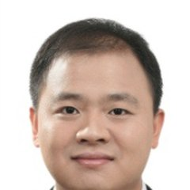

Prof. Bo An
President's Chair Professor and Head of Division of Artificial Intelligence, College of Computing and Data Science, NTU
Prof. Bo An holds a President’s Chair Professorship at Nanyang Technological University (NTU), Singapore, where he heads the Division of Artificial Intelligence within the College of Computing and Data Science. His research spans multi-agent systems, computational game theory, reinforcement learning and optimisation, with applications in security, sustainability and resource allocation. He is a Fellow of the Association for the Advancement of Artificial Intelligence (AAAI) and Editor-in-Chief of IEEE Intelligent Systems.